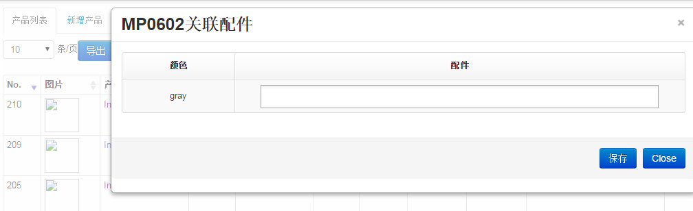

产品管理
1、产品列表页面,如下图
- 可对产品进行：新增、编辑、取消、匹配配件、设值产品阶梯价格、产品hscode、查看产品运费、查看主力明细、查看新品明细、设置上架时间、设置淘汰产品、设置销售预测方案、产品基本属性维护
- "产品基础属性维护"里可对字典信息进行维护
2、产品新建页面,如下图
- 如上图,设置供应商、国家、颜色设置后会自动生成barcode数据和阶梯价格数据;产品编辑后相应数据会联动改变
- 装箱数如果不确定就写1
3、产品基础信息维护页面,如下图
- 该功能可以对产品类型、配件类型、产品颜色、品牌、目的港进行维护
4、产品配件关系维护,如下图

- 如上图、可以配置该产品多颜色对应的配件。在这里维护了配件关系后还要到"配件信息"->"产品配件配比设置"把相应的比例配置